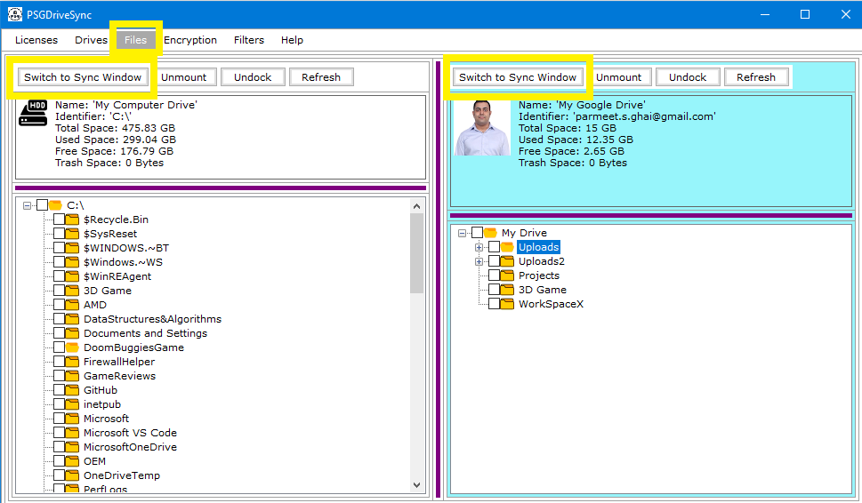
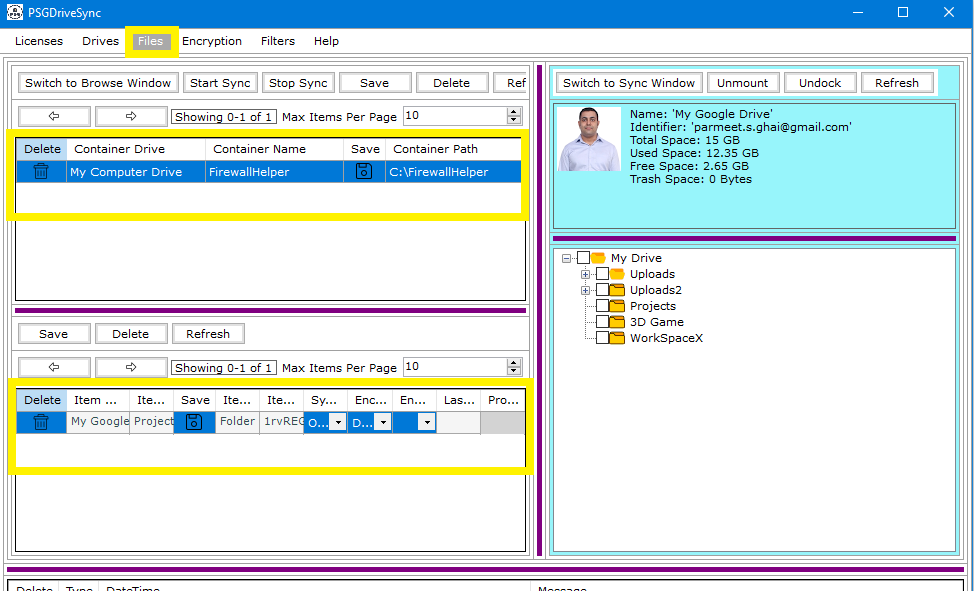

"Switch To Sync" window allows you to switch to sync mode on the currently mounted and docked drive where you can configure
different files and folders for sync operations. More details can be found at Files - Sync Mode
Following are the steps needed to be performed in order to switch to sync mode for a mounted and docked drive
|
1 |
Go to "Files" window and click on "Switch To Sync Window" button on the control bar of the drive that you need to work with. |
 |
|
2 |
Remain in "Files" window and access / setup files and folders for syncing. More details can be found at Files - Sync Mode |
 |